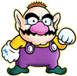

|  |  |
| 『自分のお城がほしい・・・でもお金が無い・・・。』 ワリオは、ワリオ城を建てる方法を思案していました。そんな時、海賊のウワサが流れてきました。《海賊ブラックシュガー団が巨大な黄金像を盗んだ。そして、マリオが盗まれた像を取り戻し海賊たちをこらしめようと、ブラックシュガー団を探している。》このウワサを聞いたワリオは、『これほどの海賊なら根城のキッチン島には、山のような宝物が隠されているに違いない。それを横取りして、お城を建てよう！』と考えました。そして、意気揚々と出かけました。キッチン島には海賊の手下がいっぱいいます。また、ちょっと変わった生き物もいてワリオの邪魔をします。 ワリオは島に隠された財宝を見付け出し、みごと横取りに成功できるでしょうか？そして、どんなワリオ城が建つのでしょうか？ |
|